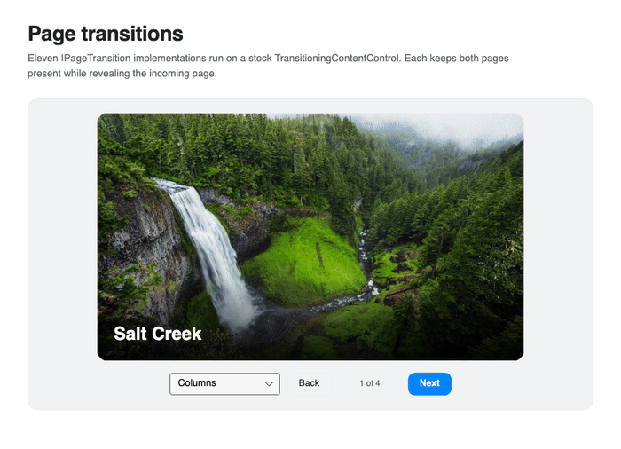

Page transitions
Nova transitions implement Avalonia's IPageTransition, so they work anywhere Avalonia accepts a page transition.
<TransitioningContentControl Content="{Binding CurrentPage}">
<TransitioningContentControl.PageTransition>
<nova:SlidePushPageTransition Duration="0.45"
Parallax="0.3" />
</TransitioningContentControl.PageTransition>
</TransitioningContentControl>
Available transitions
| Transition | Use it for |
|---|---|
| FadePageTransition | A restrained cross-page fade |
| ScaleFadePageTransition | Depth through incoming scale and outgoing lift |
| SlidePushPageTransition | Horizontal or vertical navigation with parallax |
| CurtainsPageTransition | Clipped reveals made from panels or geometric patterns |
SlidePushPageTransition.Vertical switches the direction axis. Forward and backward navigation automatically reverse the travel direction.
Curtain patterns
CurtainsPageTransition supports Columns, Blinds, Wipe, ClipWipe, Doors, Shutter, Iris, and Pixels.
<nova:CurtainsPageTransition Pattern="Pixels"
Panels="10"
Duration="0.42"
Stagger="0.04" />
Panels is ignored by fixed-count patterns. Origin controls where the iris opens.
Nova restores opacity, transforms, clipping, and page visibility after completion or cancellation, so a view can participate in later transitions without carrying stale transition state.
